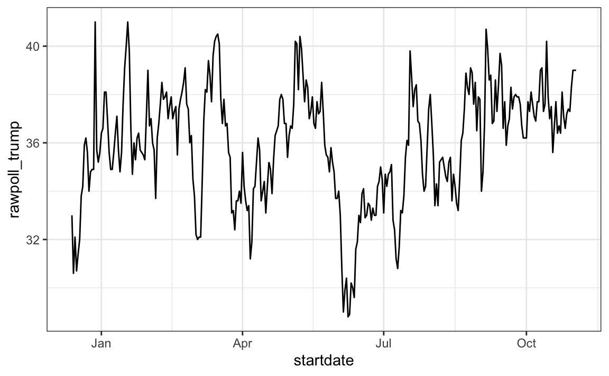
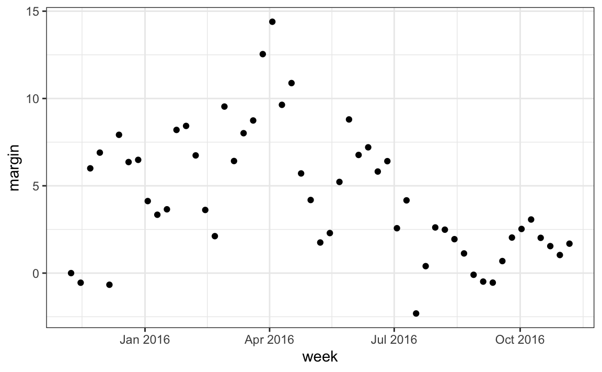

library(tidyverse)
library(dslabs)
polls_us_election_2016$startdate |> head()
#> [1] "2016-11-03" "2016-11-01" "2016-11-02" "2016-11-04" "2016-11-03"
#> [6] "2016-11-03"Dates And Times
Parsing dates and times
We have described three main types of vectors: numeric, character, and logical.
When analyzing data, we often encounter variables that are dates.
Although we can represent a date with a string, for example
November 2, 2017, once we pick a reference day, referred to as the epoch by computer programmers, they can be converted to numbers by calculating the number of days since the epoch.In R and Unix, the epoch is defined as January 1, 1970.
Parsing dates and times
So, for example, January 2, 1970 is day 1, December 31, 1969 is day -1, and November 2, 2017, is day 17,204.
Now how should we represent dates and times when analyzing data in R? We could just use days since the epoch, but then it is almost impossible to interpret.
If I tell you it’s November 2, 2017, you know what this means immediately.
If I tell you it’s day 17,204, you will be quite confused.
Similar problems arise with times and even more complications can appear due to time zones.
Parsing dates and times
- For this reason, R defines a data type just for dates and times.
The date data type
- We can see an example of the data type R uses for data here:
- The dates look like strings, but they are not:
class(polls_us_election_2016$startdate)
#> [1] "Date"- Look at what happens when we convert them to numbers:
as.numeric(polls_us_election_2016$startdate) |> head()
#> [1] 17108 17106 17107 17109 17108 17108It turns them into days since the epoch.
The
as.Datefunction can convert a character into a date.
The date data type
- So to see that the epoch is day 0 we can type.
as.Date("1970-01-01") |> as.numeric()
#> [1] 0Plotting functions, such as those in ggplot, are aware of the date format.
This means that, for example, a scatterplot can use the numeric representation to decide on the position of the point, but include the string in the labels:
polls_us_election_2016 |> filter(pollster == "Ipsos" & state == "U.S.") |>
ggplot(aes(startdate, rawpoll_trump)) +
geom_line() The date data type

The date data type
- Note in particular that the month names are displayed, a very convenient feature.
The lubridate package
- The lubridate package provides tools to work with date and times.
library(lubridate) - We will take a random sample of dates to show some of the useful things one can do:
set.seed(2002)
dates <- sample(polls_us_election_2016$startdate, 10) |> sort()
dates
#> [1] "2016-05-31" "2016-08-08" "2016-08-19" "2016-09-22" "2016-09-27"
#> [6] "2016-10-12" "2016-10-24" "2016-10-26" "2016-10-29" "2016-10-30"- The functions
year,monthanddayextract those values:
tibble(date = dates, month = month(dates), day = day(dates), year = year(dates))
#> # A tibble: 10 × 4
#> date month day year
#> <date> <dbl> <int> <dbl>
#> 1 2016-05-31 5 31 2016
#> 2 2016-08-08 8 8 2016
#> 3 2016-08-19 8 19 2016
#> 4 2016-09-22 9 22 2016
#> 5 2016-09-27 9 27 2016
#> 6 2016-10-12 10 12 2016
#> 7 2016-10-24 10 24 2016
#> 8 2016-10-26 10 26 2016
#> 9 2016-10-29 10 29 2016
#> 10 2016-10-30 10 30 2016The lubridate package
- We can also extract the month labels:
month(dates, label = TRUE) #> [1] May Aug Aug Sep Sep Oct Oct Oct Oct Oct
#> 12 Levels: Jan < Feb < Mar < Apr < May < Jun < Jul < Aug < Sep < ... < DecAnother useful set of functions are the parsers that convert strings into dates.
The function
ymdassumes the dates are in the format YYYY-MM-DD and tries to parse as well as possible.
x <- c(20090101, "2009-01-02", "2009 01 03", "2009-1-4",
"2009-1, 5", "Created on 2009 1 6", "200901 !!! 07")
ymd(x)
#> [1] "2009-01-01" "2009-01-02" "2009-01-03" "2009-01-04" "2009-01-05"
#> [6] "2009-01-06" "2009-01-07"The lubridate package
A further complication comes from the fact that dates often come in different formats in which the order of year, month, and day are different.
The preferred format is to show year (with all four digits), month (two digits), and then day, or what is called the ISO 8601.
Specifically we use YYYY-MM-DD so that if we order the string, it will be ordered by date.
You can see the function
ymdreturns them in this format.
The lubridate package
But, what if you encounter dates such as “09/01/02”? This could be September 1, 2002 or January 2, 2009 or January 9, 2002.
In these cases, examining the entire vector of dates will help you determine what format it is by process of elimination.
Once you know, you can use the many parses provided by lubridate.
For example, if the string is:
x <- "09/01/02" The lubridate package
- The
ymdfunction assumes the first entry is the year, the second is the month, and the third is the day, so it converts it to:
ymd(x)
#> [1] "2009-01-02"- The
mdyfunction assumes the first entry is the month, then the day, then the year:
mdy(x)
#> [1] "2002-09-01"The lubridate package provides a function for every possibility.
Here is the other common one:
The lubridate package
dmy(x)
#> [1] "2002-01-09"The lubridate package is also useful for dealing with times.
In base R, you can get the current time typing
Sys.time().The lubridate package provides a slightly more advanced function,
now, that permits you to define the time zone:
now()
#> [1] "2024-09-29 23:44:29 EDT"
now("GMT")
#> [1] "2024-09-30 03:44:29 GMT"- You can see all the available time zones with
OlsonNames()function.
The lubridate package
- We can also extract hours, minutes, and seconds:
now() |> hour()
#> [1] 23
now() |> minute()
#> [1] 44
now() |> second()
#> [1] 29.7- The package also includes a function to parse strings into times as well as parsers for time objects that include dates:
x <- c("12:34:56")
hms(x)
#> [1] "12H 34M 56S"
x <- "Nov/2/2012 12:34:56"
mdy_hms(x)
#> [1] "2012-11-02 12:34:56 UTC"- This package has many other useful functions.
The lubridate package
We describe two of these here that we find particularly useful.
The
make_datefunction can be used to quickly create a date object.It can take up to seven arguments: year, month, day, hour, minute, seconds, and time zone defaulting to the epoch values on UTC time.
To create an date object representing, for example, July 6, 2019 we write:
make_date(2019, 7, 6)
#> [1] "2019-07-06"The lubridate package
- To make a vector of January 1 for the 80s we write:
make_date(1980:1989)
#> [1] "1980-01-01" "1981-01-01" "1982-01-01" "1983-01-01" "1984-01-01"
#> [6] "1985-01-01" "1986-01-01" "1987-01-01" "1988-01-01" "1989-01-01"Another very useful function is
round_date.It can be used to round dates to nearest year, quarter, month, week, day, hour, minutes, or seconds.
So if we want to group all the polls by week of the year we can do the following:
polls_us_election_2016 |>
mutate(week = round_date(startdate, "week")) |>
group_by(week) |>
summarize(margin = mean(rawpoll_clinton - rawpoll_trump)) |>
ggplot(aes(week, margin)) +
geom_point() The lubridate package

The lubridate package
- Finally, you should be aware the there are useful function for computing operations on time such a
difftime,time_length, andinterval.
Dates and times with data.table
The data.table package includes some of the same functionality as lubridate.
For example, it includes the
month, andyearfunctions that are the same as those in lubridate.The equilvalent of lubridate’s
dayismday:
library(data.table)
st <- as.Date("2024-03-04")
day(st)
#> [1] 4
mday(st)
#> [1] 4- Other similar functions included in data.table are
second,minute,hour,yday,wday,week,
Dates and times with data.table
isoweekandquarter.The package also includes the classes
IDateandITime, which store dates and times more efficiently thatlubridateand base R.This convenient for large files with date stamps.
You can convert dates in the usual R format: using
as.IDateandas.ITime.You can see this by using the
object.sizefunction:
Dates and times with data.table
object.size(polls_us_election_2016$startdate)
#> 33936 bytes
object.size(as.IDate(polls_us_election_2016$startdate))
#> 17168 bytes